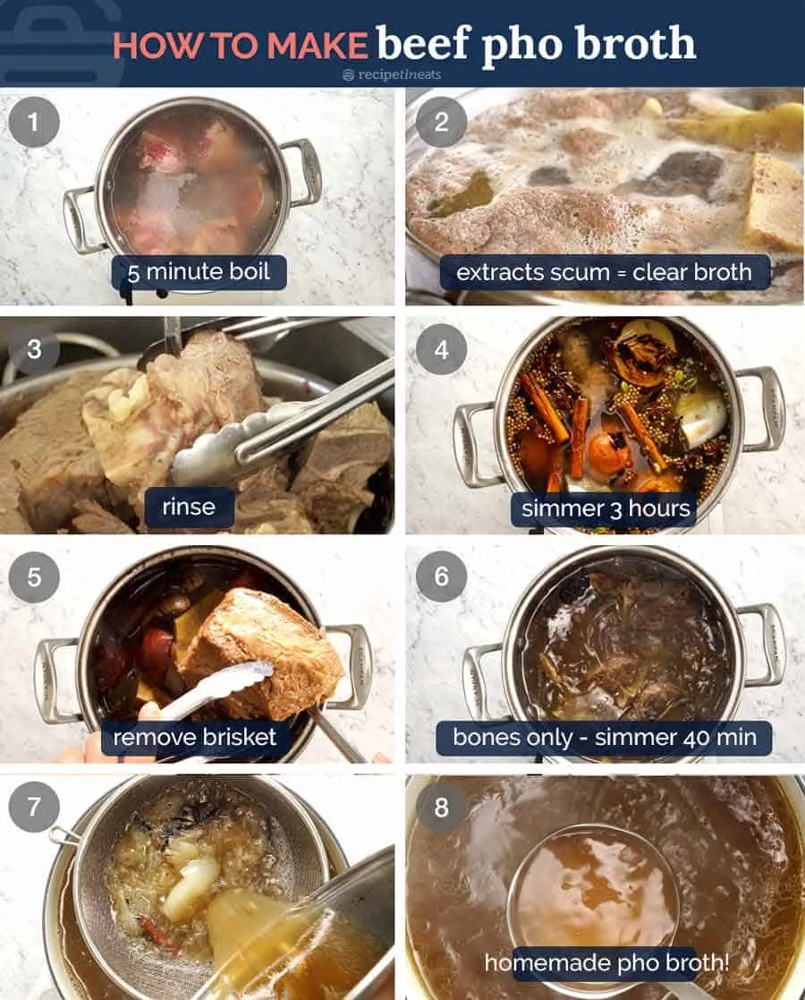

Homepage
Phở

Description
If you're wondering “What is Pho?” then you're probably also wondering “Why is she so bonkers over it???”
I don't blame you. It looks like a relatively harmless bowl of beef noodle soup.
That is, until you take your first slurp.
The Pho soup broth is everything. It's light yet full of flavour, deceptively beefy, savoury, complex, has the tiniest hint of richness and is filled with beautiful spices like cinnamon.
It is, without question, one of The Best Soups in the whole world!
Ingredients
Aromatics:
- 2 large onions , halved
- 150g / 5oz ginger , sliced down the centre
Spices:
- 10 star anise
- 4 cinnamon quills
- 4 cardamon pods
- 3 cloves (the spice cloves!)
- 1.5 tbsp coriander seeds
Beef bones:
- 1.5kg / 3lb beef brisket
- 1kg / 2lb meaty beef bones
- 1kg / 2lb marrow bones (leg, knuckle), cut to reveal marrow
- 3.5 litres / 3.75 quarts water (15 cups)
Seasoning:
- 2 tbsp white sugar
- 1 tbsp salt
- 40 ml / 3 tbsp fish sauce
Noodle Soup - PER BOWL:
- 50g / 1.5 oz dried rice sticks (or 120g/4oz fresh)
- 30g / 1 oz beef tenderloin, raw, very thinly sliced
- 3 - 5 brisket slices
Toppings:
- Beansprouts, handful
- Thai basil, 3 - 5 sprigs
- Coriander/cilantro, 3 - 5 sprigs (or more basil)
- Lime wedges
- Finely sliced red chilli
- Hoisin sauce
- Sriracha
Steps
While you'll need to man handle a considerable mound of bones and beef, I think you might be surprised how straightforward it actually is to make pho. It's more time than anything - and a very big pot!

- Quick boil - Remove impurities from beef with a 5 minute boil, it's the path to a beautiful clear soup;
- Scum - be amazed at all the icky stuff that comes out;
- Wash the bones to get all the icky scum off;
- Simmer for 3 hours - bones, beef, water, onion, ginger and spices (cinnamon, cardamom, coriander, star anise);
- Remove brisket - some is used for Pho topping, see below recipe for ways to use remainder;
- Simmer 40 minutes further with just bones;
- Strain; then
- Ladle into bowls over noodles and pile on Toppings!